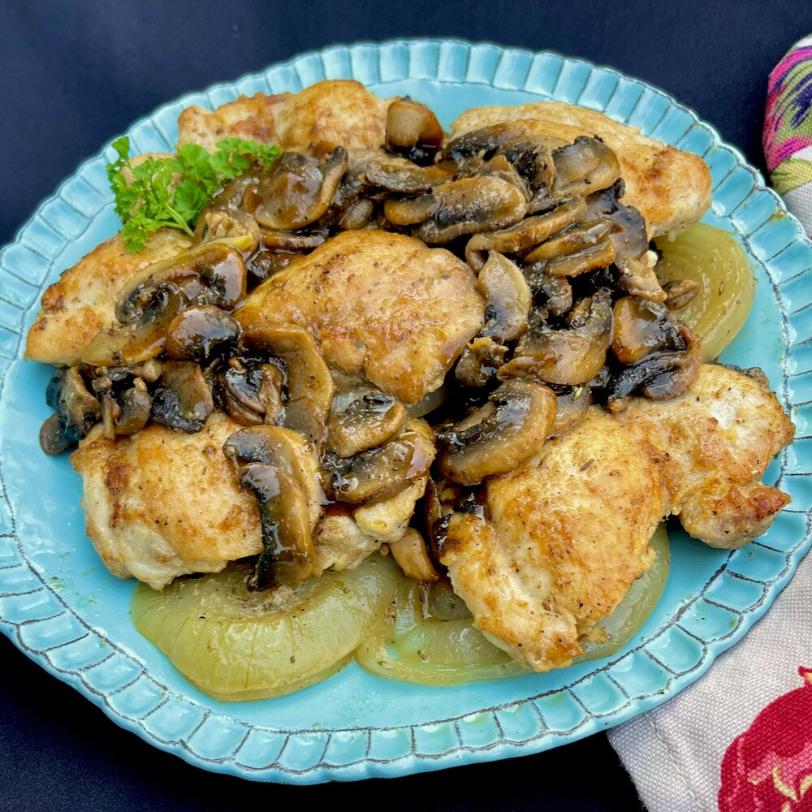

Baked Chicken Thighs with Mushrooms and Onions

Description
Chicken thighs are so versatile and healthy. This delicious main dish can be ready in just about 35 minutes.
To complete the menu, serve with roasted potatoes and green beans, or a salad.
Ingredients
- 1½ pounds boneless chicken thighs
- 1 teaspoon garlic powder
- 1 teaspoon onion powder
- salt and freshly ground black pepper to taste
- 2 tablespoons olive oil, divided
- 8 ounces white mushrooms, sliced
- 4 cloves garlic, smashed
- 1 teaspoon herbes de Provence
- 1 medium onion, cut crosswise into 6 rings
- ½ cup dry white wine
- snipped fresh chives or parsley for garnish (optional)
Steps
- Preheat the oven to 350 degrees F (175 degrees C)
- Pat thighs dry with paper towels. Combine garlic powder, onion powder, salt, and pepper in a small bowl.
Sprinkle seasoning on both sides of the chicken thighs.
- Heat 1 tablespoon olive oil in a 12-inch nonstick oven-safe skillet over medium heat.
Swirl the pan to coat the bottom with the hot oil.
Place seasoned thighs in the skillet and cook until browned, about 3 minutes. Turn thighs and brown
the other side, about 2 minutes.
Transfer browned thighs to a plate and keep warm.
- Add remaining 1 tablespoon olive oil to the same skillet.
Add mushrooms; cook and stir for about 2 minutes.
Add smashed garlic cloves and herbes de Provence; cook and stir for 1 more minute.
- Move mushrooms to one side of the skillet and place 3 onion rings into the skillet.
Place a browned chicken thigh on top of each onion slice.
Move mushrooms to create an empty space in the skillet, and place the remaining onion rings
and chicken thighs in the skillet.
- When all the onion rings and chicken thighs are placed, redistribute the mushrooms
evenly around the skillet. Pour white wine over top and cover.
- Transfer skillet to the preheated oven and bake until chicken thighs are no longer
pink in the center and the juices run clear, 15 to 20 minutes.
An instant-read thermometer inserted into the center should read at least 165 degrees F
(74 degrees C).
- Serve each chicken piece with a slice of the cooked onion and some mushrooms.
Garnish with snipped chives or parsley.
Cook's Note:
If you prefer not to cook with wine, use chicken broth, instead.
Nutrition Facts
Per Serving: 382 calories; protein 28.9g; carbohydrates 7.1g; fat 23.8g; cholesterol 95.8mg; sodium 87.5mg. Full Nutrition